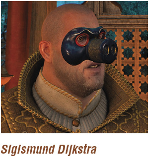
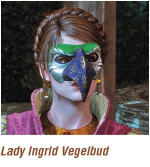
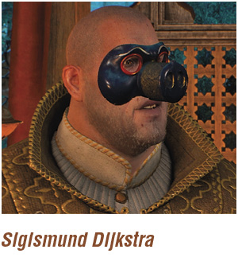
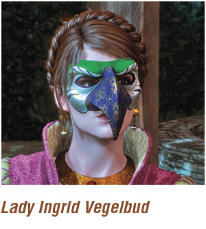

Secondary Quest: A Matter of Life and Death Finding a Panther on the Prowl
Objective:
|
{kind=link}
Wander up the formal gardens until you’re harangued by a slightly sotted rich townsman, who mistakes Triss for a common strumpet. After getting his dander up, you can:
 Tell him he’s asked for it, put up your dukes, and pummel this rude nobleman until he yields in a bout of fisticuffs.
Tell him he’s asked for it, put up your dukes, and pummel this rude nobleman until he yields in a bout of fisticuffs.
Or tell Triss to get out of here, and step away without incident.
Feel free to walk around the gardens, listening to the merry makers and revelers. When you reach the stone steps to the large wooden doors, Triss bumps into an old friend, Moritz. He isn’t the most pleasant of mages, and you can interrupt or let the conversation continue. After Moritz leaves, answer Triss however you wish. She’ll tell you about Moritz later.
{kind=link}
Through the door and into the upper gardens you go. Head right at the fountain, and onto the grassy area where there’s a Gwent tournament underway. You have a couple of interesting players to beat (and gather some rare cards from). Your first match is against Margrave Vladimir de Cret.
{kind=link}
  
  {kind=link}
{kind=link}
If you head toward the maze area, right of the fountain, you bump into a man in a lion’s mask—who turns out to be the Nilfgaardian Gerenal Voohris! You have a quick and pleasant conversation. Now mingle among the aristocrats and noblefolk, finding the large food tent where a pig-nosed Dijkstra is troughing. Speak with him if you wish, before heading toward the hedges to the left of the main fountain. Lady Vegelbug is there, speaking to some friends. She ushers you to a private location—the well.
You may ask about the witch hunters, before starting the extrication of Albert. As Ingrid describes him as a “dimwit,” he might not fully understand the threats that face him. She tells you he wears a panther mask, and the kidnapping should start once everyone is suitably sloshed.
Objectives:
|
{kind=link}
Proceed to the right side of the curved staircases, through the garden arch to a hedgerow bench where Albert is regaling some guests with some tall tales. Speak with him, and it’s obvious he’s both an idiot and drunk. After explaiing who you are, agree to meet once the fireworks start, at the entrance to the hedge maze.
{kind=link}
The Witcher® is a trademark of CD PROJEKT S. A. The Witcher game © CD PROJEKT S. A. All rights reserved. The Witcher game is based on a novel by Andrzej Sapkowski. All other copyrights and trademarks are the property of their respective owners. Learn more at thewitcher.com.